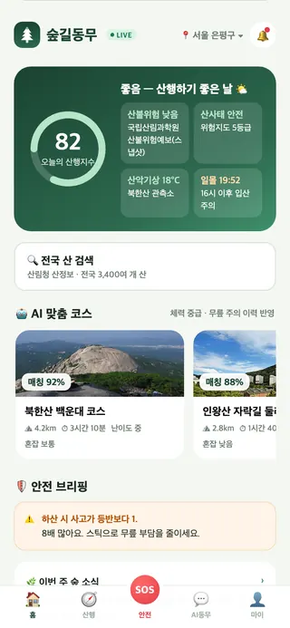

🏆 2026 산림 공공데이터·AI 활용 창업경진대회 — 제품 및 서비스 개발 부문 · 공공데이터포털 활용사례 · Civic Tech Guide
기록을 넘어,


기록을 넘어,
생명을 지키는
산행 데이터로.
산림 공공데이터 10종과 AI 5종 엔진이 맞춤 추천 → 위험 경고 → 조난 자동 감지 → 관제 대응까지, 산행의 전 과정을 지킵니다.

⚠️ 300m 앞 낙석 주의 — 우회로 안내
🛡 자동 조난감지 작동 중
3,229만월 1회 이상 등산·숲길 체험 인구산림청 국민의식 실태조사(2022)
연 10,443건산악사고 구조활동 (사망 325명/3년)소방청 구조활동 통계(2022–2024)
10종 × AI 5종산림 공공데이터 실시간 융합산림청·국립산림과학원·소방청·행안부·기상청
FEATURES
산행의 모든 순간을 지키는 6가지 기능
모든 기능이 산림 공공데이터 위에서 동작합니다 — 단순 조회가 아닌 교차 도메인 융합.
🌤
오늘의 산행지수산불위험예보 + 산사태등급 + 산악기상 실측 + 일몰시각을 0~100점 하나로. ‘갈까 말까’가 한눈에.
국립산림과학원 API🤖
AI 맞춤 코스 추천체력·부상 이력·혼잡 예측을 반영한 개인화 추천. 고령자·초보자에게는 더 보수적으로.
하이브리드 필터링⚠️
위험구간 실시간 경고산사태지도 × 사고이력 × 강우를 100m 구간마다 융합 — 위험구간 300m 전 푸시·우회로 안내.
위험도 융합 스코어🚨
조난 자동 감지 · SOS이동 멈춤·심박 이상을 AI가 감지, 무응답 시 보호자·119에 국가지점번호로 자동 전파.
시계열 이상탐지🍄
AI 숲해설사 ‘숲이’사진 한 장으로 독버섯·식물 판별(온디바이스), 4개 언어 RAG 해설로 외국인 관광객까지.
국립수목원 도감 학습🏕
산림치유 연계산행 리포트·건강 데이터 기반으로 치유의숲·휴양림 프로그램을 추천하고 바로 예약.
숲나들e 연동FOR GOVERNMENT
지자체·소방이 같은 화면을 봅니다
앱이 모은 익명(k≥50) 산행 데이터가 관제 대시보드로 환류됩니다. 실시간 산행자 분포, 구간 위험도, SOS 사건 추적, 입산 수요예측까지 — 구조 골든타임을 30% 단축하는 것이 목표입니다.
🖥 관제 대시보드 데모 열기- 실시간 관제 — SOS·조난의심 사건, 구조거점 매칭, 헬기 동선
- 위험 예방 — 구간 위험도 자동 경보, 우회 안내 일괄 발송
- 정책 데이터 — 숲길 정비·안전시설 투자 우선순위 근거 제공
- 도입 모델 — 기관당 연 라이선스(SaaS), 시범사업 2곳 협의 중
PUBLIC DATA
데이터 출처
산림분야 — 산림청 등산로 공간정보 · 국립산림과학원 산불위험예보/산악기상관측망 · 산림청 산사태위험지도 · 국립수목원 국가생물종지식정보 · 한국산림복지진흥원 숲나들e · 한국임업진흥원 산림빅데이터 거래소
융복합(타 분야) — 소방청 전국 산악사고 구조활동 현황 · 행정안전부 국가지점번호 · 기상청 단기예보 OpenAPI
개인 위치정보는 단말·보호자 동의 범위에서만 처리하며, 통계는 k-익명화(k≥50) 후 활용합니다 (위치정보법 준수).
융복합(타 분야) — 소방청 전국 산악사고 구조활동 현황 · 행정안전부 국가지점번호 · 기상청 단기예보 OpenAPI
개인 위치정보는 단말·보호자 동의 범위에서만 처리하며, 통계는 k-익명화(k≥50) 후 활용합니다 (위치정보법 준수).